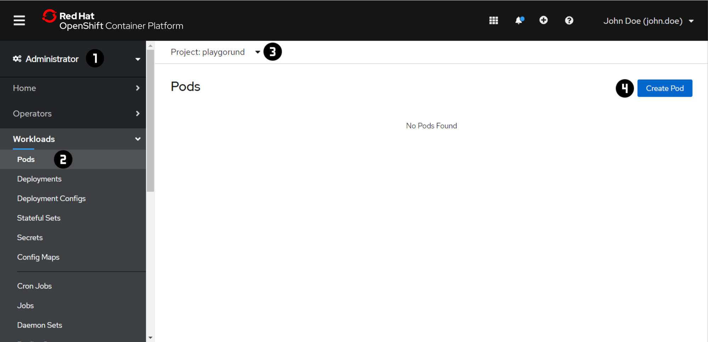
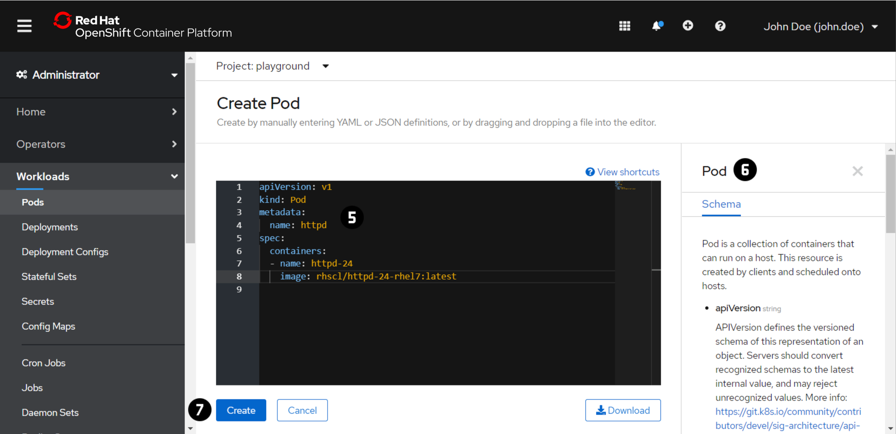
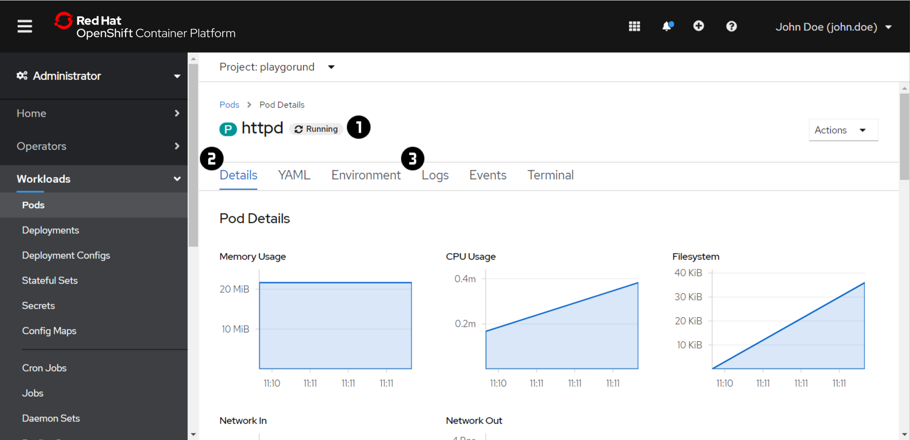
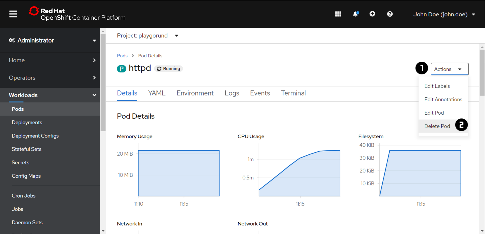

Exercise 1 - Pods¶
The goal of this exercise is to run our first application, an Apache HTTP Server, in OpenShift.
For this we use a Pod which is the smallest deployable unit of computing that you can create
and manage in OpenShift. A Pod is a group of one or more containers. In this exercise, we will
deploy a Pod that runs a single container with the image rhscl/httpd-24-rhel7:latest.
Note
For each exercise you can choose and only have to do either the 'Web Console' or the 'Command Line Interface (CLI)' section in oder to complete the exercise.
Create a Pod¶
 
- Switch to the 'Administrator' view using the dropdown menu at .
- Navigate to 'Workloads' → 'Pods' .
- Switch to the your project using the dropdown menu at . In each of the exercise make sure that you are in your project context before you are making any changes.
- Press 'Create Pod' .
- Copy the following
Poddefinition file to the editor :More detailed information about theapiVersion: v1 kind: Pod metadata: name: httpd spec: containers: - name: httpd-24 image: rhscl/httpd-24-rhel7:latestPoddefinition file can be found in the Tab at . - Press 'Create' .
Inspect a Pod¶

Note
If you have created the Pod using the CLI:
- Repeat the steps 1 - 3 of the 'Create a Pod' task above
- Open the 'Pod Details' by clicking on the
Podname in the 'Pods' overview table.
- Check the status of the
Podat . The status should be 'Running' after a couple of seconds. - Check the 'Details' of your
Pod. - In order to verify if the application in the
Podwas started successfully, have a quick look into the 'Logs' . - Also check the 'Inspect a Pod' section for the CLI.
Delete a Pod¶

You won't need the Pod in the following exercises, therefore clean up your project.
- Navigate to the 'Actions' dropdown menu in the 'Pod Details'.
- Press 'Delete Pod' .
Important
At the beginning of the exercise make sure that you are in your project context.
oc project <project name>
<projet name> with the actual name of your own project)
Create a Pod¶
-
Create a
Poddefinition file calledpod.yamlusing thevieditor with the following content:More detailed information about theapiVersion: v1 kind: Pod metadata: name: httpd spec: containers: - name: httpd-24 image: rhscl/httpd-24-rhel7:latestPoddefinition file can be found in the OpenShift or Kubernetes Documentation. -
Create a
Podby using theoc applycommand.The output of the command should look like this:oc apply -f pod.yaml[~] $ oc apply -f pod.yaml pod/httpd created
Inspect a Pod¶
- Let's verify the state of the
Podthat you have created usingoc get.You can choose the output formatoc get pods<output format>with the-oflag. Try some of the formats:wide,json,yamloc get pods -o <output format> oc describecan be used to get detailed description of a given resource. Inspect the information and events of yourPod.oc describe pod <pod name>- Print the logs for a container in a
Podusing theoc logscommand in order to check if the application in thePodwas started successfully.oc logs <pod name> - Also check the 'Inspect a Pod' section for the Web Console.
Delete a Pod¶
- You won't need the
Podin the following exercises, therefore clean up your project.oc delete pod <pod name>